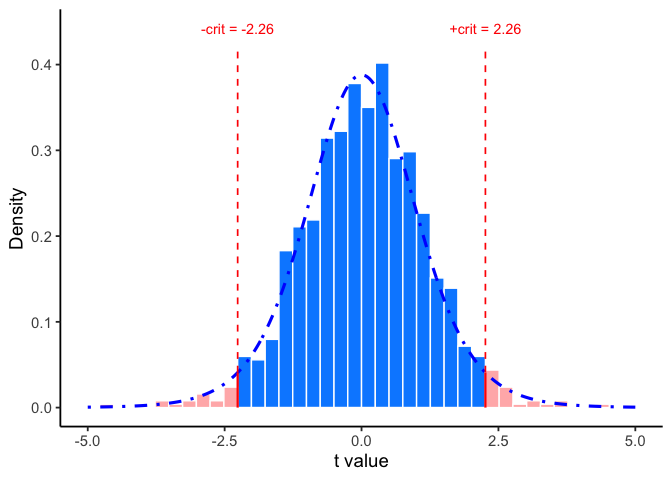
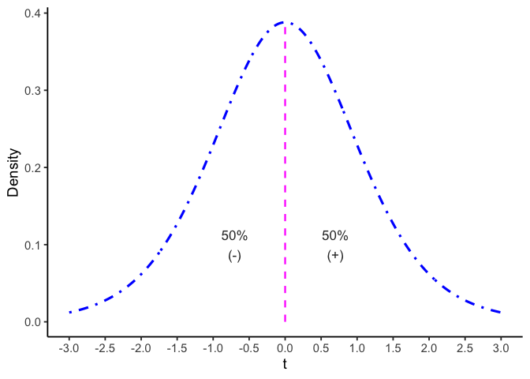
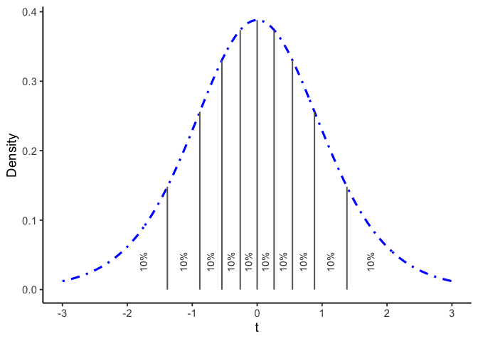
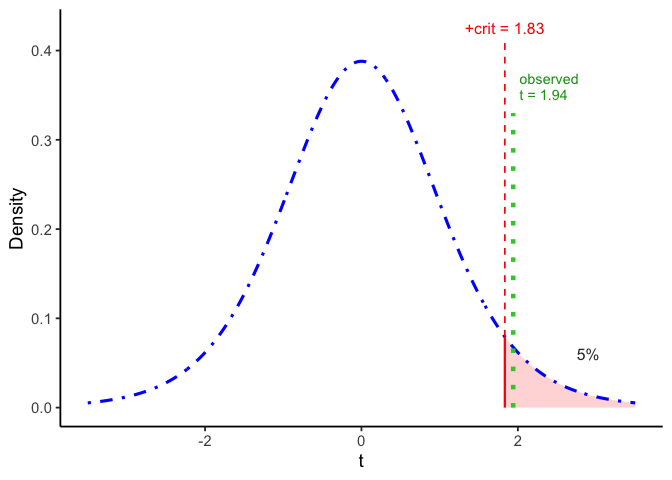
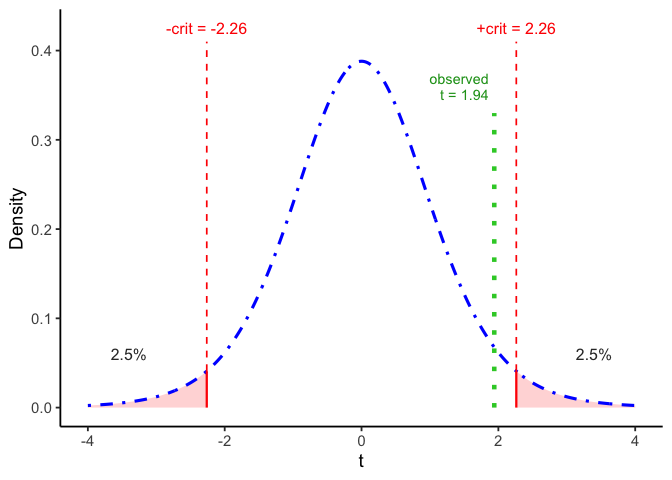
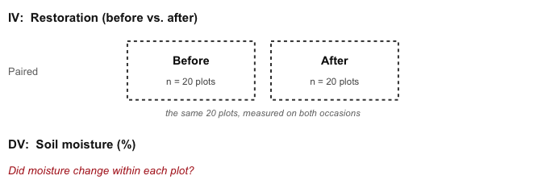
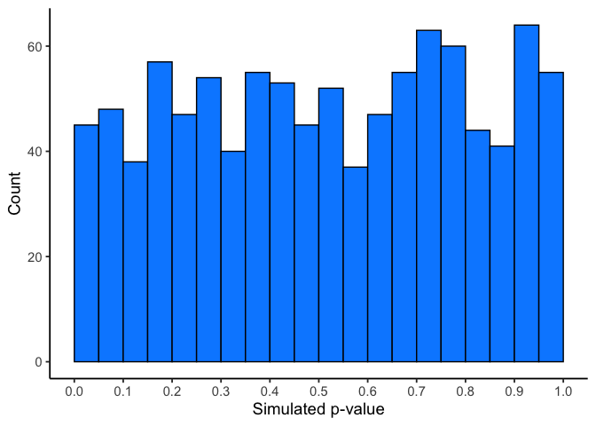
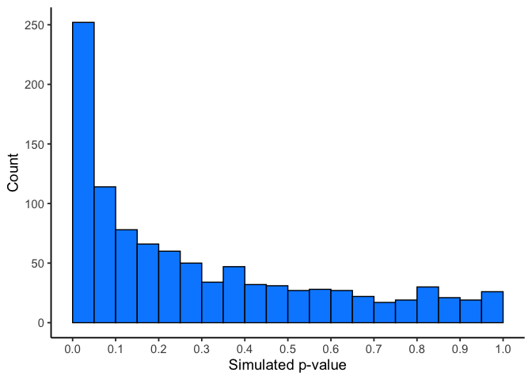

6 t-tests
6.1 Intro
In the early 1900s, William Sealy Gosset worked as a brewer at Guinness, where quality control depended on testing ingredients such as barley and hops. Every test used up beer or ingredients, so Guinness could only test small samples. The statistics of the time relied on the normal (\(z\)) distribution, which works when samples are large.
Gosset set out to measure how much extra uncertainty small samples add, and derived a new sampling distribution for it, now known as the Student’s \(t\) distribution. Guinness restricted outside publication, so he published the 1908 paper under the pseudonym “Student” (Student 1908), which is why we still say Student’s \(t\)-test. This chapter uses Gosset’s approach. We measure a signal, divide it by its standard error, and compare the resulting \(t\) to the \(t\) distribution for \(n-1\) degrees of freedom.
Why this matters. We often compare a sample mean to a reference (drinking-water standard, historical average) or compare two conditions (before/after, site A vs site B). A \(t\)-test asks whether the observed difference is larger than you would expect from sampling variation alone, given your \(n\) and variability. Chapter 5 added two questions to every test: how large the effect is, and whether the design had the power to detect it. Both carry over to the \(t\)-tests here.
Three common \(t\)-tests you will use.
- One-sample \(t\)-test. Compare a sample mean to a target (\(\mu_0\)).
- Paired \(t\)-test. Compare before/after (or matched) measurements on the same units by running a one-sample \(t\)-test on the differences.
- Independent-samples \(t\)-test (also called two-sample \(t\)-test). Compare means from two groups measured on different units. The pooled version assumes the two groups have similar spread; Welch’s version (Welch 1947) does not, and it is what R’s
t.test()runs unless you setvar.equal = TRUE.
TipTip: What you will report
Always report:
- the effect size (mean difference)
- a 95% CI
- the test statistic with its df
- the \(p\)-value
Example: “Mean change was -0.42 units (95% CI [-0.73, -0.11]; t(11) = -2.92; p = 0.014).”
6.2 From \(z\) to \(t\)
A test statistic is the effect you observed divided by an estimate of how much it could vary by chance:
\[\text{statistic}=\frac{\text{effect}}{\text{error}}\]
In Chapter 5 we used this with \(z\) to test a sample mean against \(\mu_0\):
\[z = \frac{\bar{x}-\mu_0}{\sigma/\sqrt{n}}\]
The numerator is the effect, the distance between the sample mean and the value \(H_0\) names. The denominator is the standard error, the standard deviation of the sampling distribution of the sample mean. The thing being tested is a sample mean, so the yardstick is how far sample means of size \(n\) fall from \(\mu_0\) by chance. Means vary less than individual observations do, by a factor of \(\sqrt{n}\), which is why the denominator is \(\sigma/\sqrt{n}\) rather than \(\sigma\).
\(z\) needs the population standard deviation \(\sigma\), and real studies almost never know it. The \(t\)-test estimates it with the sample standard deviation \(s\):
\[t = \frac{\bar{x}-\mu_0}{s/\sqrt{n}}\]
\(t\) still measures the distance from \(\mu_0\) in standard errors. The difference is that \(s\) is itself an estimate that changes from sample to sample, and the rest of this section shows what that does to the distribution of \(t\).
6.2.1 Why \(t\) has heavier tails than \(z\)
Because \(s\) varies from sample to sample, the \(t\) distribution has heavier tails than the standard normal. As \(n\) grows, \(s\) stabilizes and \(t\) converges to \(z\).
TipTip: When is \(z\) appropriate?
If the population SD \(\sigma\) is known and the sampling distribution of the sample mean is (approximately) normal, use \(z\). In practice, \(\sigma\) is rarely known, so we use \(t\) with \(s\) and \(df=n-1\).
6.2.2 Degrees of freedom
Figure 6.1 drew a different \(t\) curve for each value of a number called the degrees of freedom, \(df\). It is also the number in parentheses whenever a \(t\)-test is reported, as in \(t(9) = 1.94\).
For one-sample and paired \(t\)-tests, \(df = n-1\). A sample of 10 has \(df=9\).
Degrees of freedom counts how many values are still free to vary once something has been estimated from the data. Consider three numbers with a mean of 2: pick the first two freely, say 51 and \(-3\), and the third number is no longer free. It has to be \(-42\) for the mean to come out to 2. Two of the three numbers had freedom; the third didn’t. That’s \(df=n-1=2\) for three numbers.
In a \(t\)-test, the mean is the thing estimated, and the \(df\) tells you how much information is left for estimating the spread, \(s\). With few degrees of freedom, \(s\) can be well above or below \(\sigma\), so large \(t\) values turn up more often and the \(t\) curve has heavier tails. As \(df\) grows, \(s\) settles close to \(\sigma\) and the \(t\) curve approaches the normal. That is why each \(df\) gets its own curve.
In a simulation with \(H_0\) true, 7.8% of \(t\) values from samples of 10 fall beyond \(\pm 2\), against 4.9% from samples of 101, close to the 5% a normal curve gives. Small samples produce more large \(t\) values because \(s\) is sometimes well below \(\sigma\), which shrinks the denominator. That is why a test with few degrees of freedom needs a larger cutoff (2.26 at \(df = 9\)) to keep false alarms at 5%.
6.2.3 Critical values
For two-tailed tests at \(\alpha = 0.05\):
- \(z\) uses critical values \(\pm 1.96\).
- \(t\) uses wider cutoffs for small samples: \(\pm 2.262\) at \(df = 9\), \(\pm 2.086\) at \(df = 20\), \(\pm 2.045\) at \(df = 29\). They approach \(\pm 1.96\) as \(n\) increases.
Rule of thumb. Under \(H_0\), \(|t|\) beyond about 2 is rare.
6.2.4 \(t\) when \(H_0\) is true
\(t\) can be positive or negative depending on direction. Under \(H_0\), \(t \sim t_{(df=n-1)}\).
To see how \(t\) behaves when \(H_0\) is true, we can simulate it. We set up a population whose mean really is \(\mu_0 = 0\), draw a sample of 10, and compute one \(t\). Then we repeat that 1,000 times.
Before you look. Each bar in Figure 6.2 counts \(t\) values from these samples. Decide roughly what share of them will fall beyond \(\pm 2.26\), the critical values for \(df = 9\).

Most of the 1,000 values fall between \(-2\) and \(2\). About 4% fall beyond \(\pm 2.26\), close to the 5% the cutoff is built to allow. The blue curve is the \(t\) distribution with 9 degrees of freedom, and the histogram follows it. Software uses that curve in place of a simulation to find how often chance alone produces a \(t\) as large as ours.
6.3 One-sample t-test
Use a one-sample \(t\) when you want to test whether a sample mean differs from a reference value (\(\mu_0\)). It asks whether the observed difference is bigger than you’d expect from sampling variability, given \(n\) and your sample SD \(s\).
\[t = \frac{\bar{x}-\mu_0}{s/\sqrt{n}}, \qquad df = n-1\]
After calculating \(t\) from our data, we compare the observed \(t\) to a \(t\) distribution with \(n-1\) degrees of freedom to get a \(p\)-value and a decision at \(\alpha\).
6.3.1 Calculating t from data
Let’s calculate a one-sample \(t\) statistic step by step using a short example. Ten students each took a 10-question true/false quiz (50% expected by chance). Their scores (percent correct) are:
Scores: 50, 70, 60, 40, 80, 30, 90, 60, 70, 60
By hand, the standard error of the mean is the sample SD divided by the square root of \(n\):
\[\text{SE} = \frac{s}{\sqrt{n}} = \frac{17.92}{\sqrt{10}} = 5.67\]
And \(t\) is the difference between the sample mean (61) and the reference value (50, chance level), divided by that SE:
\[t = \frac{\bar{x}-\mu_0}{SE} = \frac{61-50}{5.67} = 1.94\]
We can confirm this with a single R command, t.test(scores, mu = 50):
Results: \(t(9)=1.94\), \(p=0.0842\); mean \(=61\) (95% CI [48.18, 73.82]).
Confidence interval. The 95% CI in that output is \(\bar{x} \pm t_{crit} \cdot SE\), with \(t_{crit}\) taken from the \(t\) distribution with \(n-1\) degrees of freedom. Here that is \(61 \pm 2.262(5.67)\), or [48.18, 73.82]. The interval contains 50, so the test does not reject \(H_0\). For a two-tailed test at \(\alpha\), the \(100(1-\alpha)\%\) CI and the critical value always reach the same decision, the same equivalence Chapter 4 showed for \(z\).
Interpretation. The mean (61%) is above chance (50%), but the difference is not statistically significant at \(\alpha=0.05\).
Assumptions check. The 10 scores spread evenly around 60 with no outliers, so approximate normality is reasonable. Section 6.3.5 covers how to check this.
6.3.2 Interpreting \(t\)
Extreme sample means are unlikely if \(H_0\) is true, which is why large \(|t|\) values are rare. That is the basis of the decision rule for \(t\)-tests: if your observed \(t\) falls beyond the critical values, you reject \(H_0\).
We’re asking whether our \(t\)-value could plausibly have come from the null distribution: the distribution of \(t\)-values we’d see across many samples of size 10, if the true mean were exactly 50 (chance level). Figure 6.3 shows what that distribution looks like, at \(df=9\).

Under \(H_0\), \(t\) is most likely to be near zero, because chance alone rarely produces a large difference. The distribution is symmetric, so half of all \(t\)-values are at or above zero and half are at or below.
We can get more precise than a 50/50 split. Figure 6.4 divides the same distribution into ten regions, each containing 10% of the distribution. Notice the regions get wider out in the tails: since most \(t\)-values cluster near 0, it takes a wider interval out there to capture the same 10%.

For example:
- \(t \leq -1.38\): \(p = 10\%\)
- \(-1.38 \leq t \leq -0.88\): \(p = 10\%\)
- \(-0.88 \leq t \leq -0.54\): \(p = 10\%\)
- \(t \geq 1.38\): \(p = 10\%\)
Each range captures the same 10% of the distribution, even though the ranges themselves are different widths.
Our quiz \(t\) of 1.94 is beyond 1.38, so it falls in the top 10% of this distribution. Its exact \(p\)-value comes from software, and the one-tailed section below uses it.
6.3.3 Getting the p-values for \(t\)-values
Older textbooks printed \(p\)-values for \(t\) in a table at the back of the book. Today R, Excel, and online calculators give them directly. You’ll practice this in lab, both with software and by simulation.
Software needs two things from you to compute a \(p\)-value: the degrees of freedom, which you already have, and whether the test is one-tailed or two-tailed, which comes next.
6.3.4 One-tailed vs. two-tailed, applied
Chapters 4 and 5 covered when each is justified. For a \(t\)-test, the choice changes the critical value, and therefore the \(p\)-value, for the exact same data.
For our quiz-score example (\(df=9\)), a one-tailed test only needs to clear 5% of the distribution on one side. A two-tailed test has to clear 2.5% on each side, which pushes the critical value farther out:


For our result, \(t(9) = 1.94\), the one-tailed \(p\) is 0.042 and the two-tailed \(p\) is 0.084, exactly double, because a two-tailed test counts the matching region in both tails. The choice changes the decision here. One-tailed, the result is significant at \(\alpha = 0.05\); two-tailed, it is not.
6.3.5 Assumptions, and what to do when they don’t hold
Every test in this book has assumptions. Assumptions are conditions that need to be roughly true for the math behind the test to be trustworthy. There are two different kinds of assumptions.
The universal assumption. Every test in this book, including the nonparametric tests in Chapter 7, assumes your observations are independent (in paired designs, the pairs) and came from a sound study design (a fair sample, not one that systematically favors certain values). Because it applies everywhere, we won’t list it test by test from here on. When an exam or homework question asks you to “list the assumptions of this test,” it means the test-specific assumptions below.
Test-specific assumptions. These come from how a particular test’s math works, and they differ test to test. For the one-sample and paired \(t\)-tests, the specific assumption is approximate normality of the outcome itself (one-sample) or of the difference scores (paired). The \(t\)-distribution we’ve been using to get \(p\)-values is derived assuming the population is normal, which makes the sample mean normally distributed too. If your data are badly skewed and your sample is small, that assumption fails, and the \(p\)-value may not be the true probability of a result this extreme under \(H_0\).
How worried should you be? It depends on \(n\). With a large sample, the sampling distribution of the sample mean tends toward normal even when individual observations are skewed (the Central Limit Theorem), so the \(t\)-test is fairly robust to non-normality once \(n\) is reasonably large. Much environmental field data comes from small samples that are also skewed. Examples include a handful of expensive water samples, a short list of monitoring wells, or the five plots you had time to visit in a season. A \(t\)-test’s answer becomes questionable when the sample is small and the data are also non-normal.
What to do about it. First, look at your data. A histogram or a Q-Q plot will usually tell you whether “approximately normal” is a reasonable description or a stretch. You can also run a formal normality test, the Shapiro-Wilk test (shapiro.test() in R), which tests \(H_0\): the data came from a normal distribution. Treat it as one more piece of evidence, though, rather than a strict gate. With a small sample, exactly when a violation matters most, it has low power and will often say “no problem” even when there is one. If your data look far from normal and your sample is small, you can use a nonparametric test instead, which does not assume normality. You’ll meet these nonparametric alternatives in the next chapter, once we’ve covered all three \(t\)-test forms below.
6.4 Paired t: before/after or matched
When the same units are measured twice (before/after, matched pairs), the question is whether they changed. The natural data unit is the within-unit difference.
Design in this worked example. Ecologists measured soil moisture at 20 field plots before wetland restoration and again one year later, to see whether restoration increased moisture enough to support plant reestablishment and carbon sequestration. Figure 6.7 shows the design.

The dashed boxes mark what makes this design paired. In every design so far the boxes held different units, and the test compared one set against another. Here both boxes hold the same 20 plots, so each plot’s Before value can be subtracted from its own After value.
Define differences and their meaning. Choose an order and stick to it:
- \(d_i = \text{After}_i - \text{Before}_i\)
- \(d_i>0\): plot had more soil moisture after restoration (increase)
- \(d_i<0\): plot had less soil moisture after restoration (decrease)
This subtraction cancels between-plot variability (some plots are naturally wetter than others) and focuses on within-plot change. Because it removes those plot-to-plot differences, the paired test’s standard error is smaller, so it has more power than an independent-samples test on the same data.
Test on differences (paired \(t\)). Compute one difference per plot, then run a one-sample \(t\) against 0:
\[\bar d=\frac{1}{n}\sum_{i=1}^n d_i, \quad s_d=\text{SD}(d_1,\ldots,d_n), \quad t = \frac{\bar d - 0}{s_d/\sqrt{n}}, \quad df=n-1.\]
The sign of \(t\) matches \(\bar d\) and your difference direction.
What to report. \(\bar d\) (the mean change), a 95% CI, \(t(df)\), and \(p\). Optionally add a standardized effect size, \(\bar d / s_d\), the paired version of Cohen’s \(d\).
R pointers (you’ll do this in lab).
- Compute differences:
d <- after - before - Paired \(t\):
t.test(d, mu = 0)ort.test(after, before, paired = TRUE) - CI for \(\bar d\): from the
t.testoutput
6.4.1 Calculate t
To calculate \(t\) for a paired-samples \(t\)-test, we use the one-sample \(t\)-test formula from the previous section, applied to the difference scores instead of raw scores. The paired-samples \(t\)-test is a one-sample \(t\)-test on a single group of numbers, the differences.
Let’s find \(t\) for the mean difference scores:
| Plot | Before | After | Difference | Deviation from mean difference | Squared deviation |
|---|---|---|---|---|---|
| 1 | 18 | 21 | 3 | 0.2 | 0.04 |
| 2 | 22 | 26 | 4 | 1.2 | 1.44 |
| 3 | 16 | 22 | 6 | 3.2 | 10.24 |
| 4 | 25 | 29 | 4 | 1.2 | 1.44 |
| 5 | 21 | 18 | -3 | -5.8 | 33.64 |
| Sums | 102 | 116 | 14 | 0 | 46.8 |
| Means | 20.4 | 23.2 | 2.8 | 0 | 9.36 |
| sd | 3.421 | ||||
| SE | 1.53 | ||||
| t | 1.83 |
The five differences average 2.8 percentage points, with \(s_d = 3.42\), so \(SE = 3.42/\sqrt{5} = 1.53\) and \(t = 2.8/1.53 = 1.83\).
If we did this test using R, we would obtain almost the same numbers (there is a little bit of rounding in the table).
| Mean difference | t | df | p-value |
|---|---|---|---|
| 2.8 | 1.83 | 4 | 0.141 |
The mean difference was \(+2.8\) percentage points, so soil moisture increased on average. Getting a \(p\)-value from this \(t\), and choosing one-tailed vs. two-tailed, works exactly like it did for the one-sample case (see the One-sample \(t\)-test section above). Two-tailed, \(t(4) = 1.83\), \(p = 0.141\), which is not significant. With only five plots, a mean increase this large would not be unusual even if restoration had no effect on soil moisture.
6.4.2 Scaling to the full sample
The five plots above are a subset of the full restoration study, which measured all 20 paired plots.
| Mean difference | t | df | p-value |
|---|---|---|---|
| 1.9 | 2.5 | 19 | 0.022 |
At \(n=20\), \(t(19) = 2.5\), \(p =0.022\): significant. The mean difference (1.9 percentage points) is smaller than the 5-plot subset’s 2.8. The larger \(t\) comes from the standard error, which fell from 1.53 to 0.76 with four times as many plots. A mean increase of 1.9 points would be unlikely if restoration had no effect, so the extra plots gave more power to detect a real effect.
6.5 Two independent groups
The independent-samples \(t\)-test is the third and last design in this chapter. The logic is the same as the one-sample and paired cases: a mean difference divided by an estimate of its variability. Only the research design is different.
Use an independent-samples \(t\)-test for a between-subjects design: different people or units in each condition, each measured once. With two groups of 5, that’s 10 units in total, none of them paired. Without repeated measures on the same unit, there’s no meaningful way to subtract scores between conditions the way the paired \(t\)-test does.
The numerator is the mean difference between groups, as in the other two tests. The denominator differs from the paired case, because now we need a single estimate of variability built from two separate samples instead of one.
A natural first guess is to average the two groups’ standard errors:
\[t = \frac{\bar{A}-\bar{B}}{\left(\dfrac{SE_A+SE_B}{2}\right)}\]
That average understates how much a difference between two means varies. The standard error of a difference between two independent means is \(\sqrt{SE_A^2 + SE_B^2}\), which is always larger than the average of the two SEs. Instead of averaging, the independent-samples \(t\)-test pools the two groups’ variances, weighted by their degrees of freedom, into a single estimate for the denominator:
\[t = \frac{\bar{x}_A-\bar{x}_B}{s_p\sqrt{\dfrac{1}{n_A}+\dfrac{1}{n_B}}}\]
where the pooled standard deviation \(s_p\) is (note \(s_A^2\) and \(s_B^2\) here are variances, not standard deviations):
\[s_p = \sqrt{\frac{(n_A-1)s_A^2 + (n_B-1)s_B^2}{n_A+n_B-2}}\]
The pooled test has \(df = n_A + n_B - 2\), one degree of freedom used for each group’s mean. With two groups of 5, that is \(df = 8\), the 8 in \(t(8)\) below.
The pooled test adds two test-specific assumptions: the outcome is approximately normal within each group, and the two groups have similar variances. When the spreads clearly differ, use Welch’s version instead.
The example below follows that formula step by step in R, then checks it against t.test(). We print R’s raw console output here instead of a formatted table, because this is the block you will see in lab, and you can check the hand-computed \(t\) against its t = value.
## By "hand" using R
a <- c(1,2,3,4,5)
b <- c(3,5,4,7,9)
n_a <- length(a) # sample size for A
n_b <- length(b) # sample size for B
mean_difference <- mean(a)-mean(b) # compute mean difference
variance_a <- var(a) # compute variance for A
variance_b <- var(b) # compute variance for B
# Compute top part and bottom part of sp formula
sp_numerator <- (n_a - 1) * variance_a + (n_b - 1) * variance_b
sp_denominator <- n_a + n_b - 2
sp <- sqrt(sp_numerator/sp_denominator) # compute sp
# compute t following the formula
t <- mean_difference / (sp * sqrt(1/n_a + 1/n_b))
t # our hand-computed t
#> [1] -2.017991
# the same test via R's built-in function: compare the "t = " value
t.test(a,b, paired=FALSE, var.equal = TRUE)
#>
#> Two Sample t-test
#>
#> data: a and b
#> t = -2.018, df = 8, p-value = 0.0783
#> alternative hypothesis: true difference in means is not equal to 0
#> 95 percent confidence interval:
#> -5.5710785 0.3710785
#> sample estimates:
#> mean of x mean of y
#> 3.0 5.6Our hand-computed \(t\) is \(-2.02\), and the t = -2.018 line in R’s output matches it. R also reports \(df = 8\), \(p = 0.078\), and the 95% confidence interval for the difference.
Cohen’s \(d\) for two independent groups divides the mean difference by the pooled standard deviation, \(d = (\bar{x}_A - \bar{x}_B)/s_p\). Here \(s_p = 2.04\), so \(d = -2.6/2.04 = -1.28\).
Table 6.1 sets the three forms side by side. Each one divides an effect by its standard error. The design decides what counts as the effect and how its standard error is estimated.
| One-sample | Paired | Independent-samples | |
|---|---|---|---|
| Design | One sample against a reference value | The same units measured twice | Two separate groups |
| Effect (numerator) | \(\bar{x} - \mu_0\) | \(\bar{d}\) | \(\bar{x}_A - \bar{x}_B\) |
| Standard error (denominator) | \(s/\sqrt{n}\) | \(s_d/\sqrt{n}\) | \(s_p\sqrt{1/n_A + 1/n_B}\) |
| \(df\) | \(n - 1\) | \(n - 1\) (\(n\) = number of pairs) | \(n_A + n_B - 2\) |
| R call | t.test(x, mu = 50) |
t.test(after, before, paired = TRUE) |
t.test(a, b, var.equal = TRUE) |
ImportantResults reporting: t-tests
All three forms report the same four things: the direction in plain language, the effect size, the test statistic with its df, and \(p\). The three forms differ only in what counts as the effect.
One-sample, where the effect is the sample mean against the reference value:
Mean quiz score was 61%, which did not differ significantly from the 50% expected by chance, t(9) = 1.94, p = 0.084, 95% CI [48.18, 73.82].
Paired, where the effect is the mean difference score:
Soil moisture increased by 1.90 percentage points after restoration, t(19) = 2.50, p = 0.022, 95% CI [0.31, 3.49].
Independent-samples, where the effect is the difference between two group means:
Group A scored lower than Group B, a mean difference of -2.6, t(8) = -2.02, p = 0.078, 95% CI [-5.57, 0.37].
Note the paired write-up never mentions the before and after means separately. The difference score is the unit of analysis, so that single number plus its CI is the whole result.
6.6 Simulating data for t-tests
Earlier in this chapter we simulated \(t\) under \(H_0\) and saw its null distribution in Figure 6.2. The same kind of simulation also gives a \(p\)-value for each repetition, and those \(p\)-values show what a test does when \(H_0\) is true and when it is false.
Simulating under conditions you choose shows how sampling error affects results for a given sample size, expected difference, and amount of variation. Formal power analyses use the same method.
6.6.1 Simulating a one-sample t-test
A simulation has two steps.
- Decide what the population looks like. Here each sample is 30 sites, with values drawn from a normal distribution with mean 50 and SD 25.
- Draw one sample from that population, run the \(t\)-test, and save the statistics you care about (\(t\) and \(p\)). Repeat 1,000 times and look at how they are distributed.
Every test compares the sample mean to \(\mu_0 = 50\), which is also the true population mean, so \(H_0\) is true in every repetition. Figure 6.8 shows the 1,000 \(p\)-values it produces.

The \(p\)-values in Figure 6.8 are flat, as they should be when \(H_0\) is true. This means you have the same chance of getting a \(t\) with a p-value between 0 and 0.05 as you would of getting one between 0.90 and 0.95. Those ranges are both ranges of 5%, so they hold an equal share of the \(t\) values by definition.
The first bar holds the 45 \(p\)-values below 0.05. Each one is a test that rejected a true \(H_0\), a Type I error. Together they make up about 5% of the 1,000, which is the \(\alpha\) we chose.
6.6.2 Simulating paired and independent-samples tests
The paired and independent-samples cases behave the same way, because they use the same \(t\) calculation on different inputs. A paired test runs a one-sample \(t\) on the difference scores; an independent-samples test swaps in the pooled standard error. Simulate either one under \(H_0\) and you get the same two pictures: a \(t\) distribution centered on zero, and a flat \(p\) distribution.
Chapter 5 simulated 1,000 experiments with a real difference (two groups of 10, means 10 and 12.5, SD 5) and counted how often \(p < 0.05\) to estimate power. Figure 6.9 shows the 1,000 \(p\)-values from the same setup.

With a real difference, the \(p\)-values pile up near 0, while under \(H_0\) in Figure 6.8 they spread evenly from 0 to 1. Here \(H_0\) is false, so rejecting it is a correct decision, not a Type I error. The first bar holds the 187 experiments that rejected \(H_0\), and their share of the 1,000 is the design’s power. The other 813 missed a difference that was really there. Chapter 5 showed how a larger sample raises power.
6.7 Chapter Summary
Why it matters. The \(t\)-test measures a signal against the noise around it. ANOVA, regression, and the rest of the course use the same logic.
Core ideas
- Signal over noise. A difference is only impressive relative to the variability around it. Every \(t\) statistic is a ratio: the effect you observed on top, an estimate of how much that effect could vary by chance on the bottom.
- Three forms, one idea. The one-sample, paired, and independent-samples \(t\)-tests differ in how they compute the effect and its standard error, but all three ask whether an observed difference is large compared to its own standard error. The paired test is just the one-sample test applied to difference scores.
- Why \(t\) and not \(z\). When the population SD \(\sigma\) is unknown, we estimate it with \(s\), which adds uncertainty. The \(t\) distribution accounts for that by being fatter in the tails than the normal, and it tightens toward the normal as degrees of freedom grow.
- Assumptions come in two kinds. Independence and a sound study design apply to every test in this book and are assumed from here on. The test-specific assumption is approximate normality: of the outcome (one-sample), of the difference scores (paired), or of each group (independent samples). The pooled independent-samples test also assumes similar variances.
- How worried to be depends on \(n\). Thanks to the Central Limit Theorem, \(t\)-tests are fairly robust to non-normality once samples are reasonably large. \(t\)-tests are least trustworthy when samples are small and skewed, which describes a lot of environmental field data. Plot your data first, and treat a Shapiro-Wilk result as evidence rather than a gate, since it has the least power with small samples, when a violation matters most.
- Choose your tails before you look. Default to two-tailed. Reserve one-tailed tests for cases where a difference in the opposite direction would lead to the same action as no difference, and decide before seeing the result.